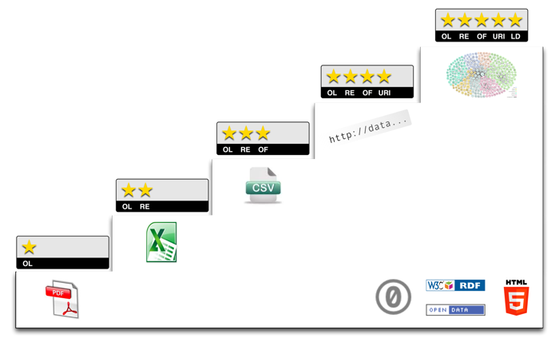

5 ★ Datos Abiertos
Tim Berners-Lee, el inventor de la Web e iniciador de los Datos Enlazados (Linked Data), sugirió un esquema de desarrollo de 5 estrellas para Datos Abiertos. A continuación te mostramos ejemplos para cada escalón o nivel de estrellas y te explicamos los costos y beneficios involucrados en cada caso.

Ejemplos ...
A continuación te presentamos ejemplos para cada nivel del esquema de 5 estrellas de Datos Abiertos de Tim. Los datos utilizados para los ejemplos son 'pronóstico de temperatura para la ciudad de Galway en Irlanda para los próximos 3 días':
| ★ |
publica tus datos en la Web (con cualquier formato) y bajo una licencia abierta |
ejemplo ... |
| ★★ |
publícalos como datos estructurados (ej: Excel en vez de una imagen de una tabla escaneada) |
ejemplo ... |
| ★★★ |
usa formatos no propietarios (ej: CSV en vez de Excel) |
ejemplo ... |
| ★★★★ |
usa URIs para denotar cosas, así la gente puede apuntar a estas |
ejemplo ... |
| ★★★★★ |
enlaza tus datos a otros datos para proveer contexto |
ejemplo ... |
Costos y Beneficios ...
¿Cuáles son los costos y beneficios de los datos publicados en el nivel ★?
Como consumidor ...
- ✔ Puedes verlos.
- ✔ Puedes imprimirlos.
- ✔ Puedes guardarlos localmente (en tu disco duro o en una memoria USB).
- ✔ Puedes ingresar los datos en cualquier otro sistema.
- ✔ Puedes cambiar los datos como quieras.
- ✔ Puedes compartir los datos con quien quieras.
Como editor ...
- ✔ Es simple publicarlos.
- ✔ No tienes que explicar repetidamente a otros que pueden usar tus datos.
“
Es grandioso tener datos accesibles en la Web bajo una licencia abierta (como PDDL, ODC-by ó CC0), sin embargo, los datos están atrapados en un documento. Además de requerir la creación de un software para extraer los datos, es difícil sacar los datos del documento.
”
¿Cuáles son los costos y beneficios de los datos publicados en el nivel ★★?
Como consumidor, puedes hacer todo lo que haces en el nivel ★ y además:
- ✔ Puedes procesarlos directamente con software propietario para agregarlos, hacer cálculos, visualizarlos, etc.
- ✔ Puedes exportarlos a otro formato (estructurado).
Como editor ...
- ✔ Todavía es simple publicarlos.
“
¡Espléndido! Los datos son accesibles en la Web en forma estructurada (es decir, en formato para máquinas), sin embargo, los datos todavía están atrapados en un documento. Para extraerlos se necesita un software propietario.
”
¿Cuáles son los costos y beneficios de los datos publicados en el nivel ★★★?
Como consumidor, puedes hacer todo lo que haces en el nivel ★★ y además:
- ✔ Puedes manipular los datos de cualquier forma que quieras, sin limitación de características o de uso de algún tipo de software en particular.
Como editor ...
- ⚠ Podrías necesitar convertidores o plug-ins para exportar los datos desde el formato propietario.
- ✔ Todavía es relativamente simple publicarlos.
“
¡Excelente! Los datos no solo están disponibles en la Web sino que también cualquiera puede utilizarlos fácilmente. Por otro lado, todavía son solo datos publicados en la Web y no datos integrados a la Web.
”
¿Cuáles son los costos y beneficios de los datos publicados en el nivel ★★★★?
Como consumidor, puedes hacer todo lo que haces en el nivel ★★★ y además:
- ✔ Puedes enlazarlos desde cualquier otro sitio (Web o local).
- ✔ Puedes marcarlos como favoritos.
- ✔ Puedes reutilizar partes de los datos.
- ✔ Podrías reutilizar herramientas y librerías disponibles, incluso si estas solo entienden parte de los patrones que utilizó quien los publicó.
- ⚠ Entender la estructura de un gráfico de datos RDF puede requerir más esfuerzo que el necesario para entender datos tabulares (Excel/CSV) o en estructura de árbol (XML/JSON).
- ✔ Puedes combinar sin problemas los datos con otros. Las URI son un esquema global por lo que si dos cosas tienen la misma URI entonces así fue intencionado, y de ser así ¡esto está en camino de alcanzar el nivel de 5 estrellas de datos!
Como editor ...
- ✔ Tienes control granular sobre los datos y puedes optimizar su acceso (balanceo de carga, cacheo, etc.)
- ✔ Otros editores de datos pueden ahora enlazarse a tus datos, ¡promoviéndolos a 5 estrellas!
- ⚠ Usualmente inviertes algún tiempo dividiendo los datos para analizarlos.
- ⚠ Tendrás que asignar URIs a los datos y pensar en cómo representarlos.
- ⚠ Necesitas encontrar patrones existentes para reutilizar o crear tus propios patrones.
“
¡Grandioso! Ahora los datos están integrados a la Web. Los datos (más importantes) tienen una URI y pueden ser compartidos en la Web. Una forma de representar los datos es utilizar RDF, sin embargo otros formatos como Atom pueden ser convertidos/mapeados, si se requiere.
”
¿Cuáles son los costos y beneficios de los datos publicados en el nivel ★★★★★?
Como consumidor, puedes hacer todo lo que haces en el nivel ★★★★ y además:
- ✔ Puedes descubrir más datos (relacionados) mientras consumes los datos.
- ✔ Puedes aprender directamente acerca del esquema de datos.
- ⚠ Ahora tienes que manejar enlaces rotos de datos, como los errores 404 en las páginas web.
- ⚠ Presentar los datos desde un enlace arbitrario como hecho es tan riesgoso como dejar que cualquier persona incluya contenido de cualquier sitio web en tus páginas. Precaución: todavía se necesita la confianza y el criterio común.
Como editor ...
- ✔ Puedes hacer que tus datos sean descubiertos.
- ✔ Puedes incrementar el valor de tus datos.
- ✔ Puedes ganar los mismos beneficios de los enlaces como los consumidores.
- ⚠ Necesitarás invertir recursos para enlazar tus datos a otros en la Web.
- ⚠ Podrías tener que reparar enlaces rotos o incorrectos.
“
¡Brillante! Ahora son datos integrados en la Web y enlazados a otros datos. Tanto el consumidor como el editor se benefician del efecto de red.
”
Ver también
Gracias a Andy Seaborne por destacar el bug CSV, a Kerstin Forsberg por sugerir destacar los datos en los ejemplos de 4/5 estrellas, así como también a Vassilios Peristeras por proponer la explicación no solo de 'qué' sino de 'por qué'. Gracias también a Egon Willighagen por proveer más detalles acerca de los beneficios de los datos en nivel de una estrella. Contribuciones adicionales de Christopher Gutteridge.
Este sitio es posible gracias a EC FP7 Support Action LOD-Around-The-Clock (LATC).